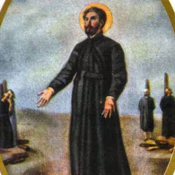

Isusovački blaženici
Brat
Bl. Leonard Kimura
1575. – 1619.
Leonard Kimura bio je putujući katehist i isusovački brat iz Nagasakija. Zatvor je pretvorio u mjesto poučavanja, zajedničke molitve i obraćenja mnogih zatočenika.
Tekst je preveden i prilagođen uz pomoć umjetne inteligencije.

Izvor slike
- Spomendan
- 6. veljače
- Zaštitništvo
- Nije navedeno u izvoru
- Životni vijek
- 1575. – 1619.
- Djelovanje
- Obrazovanje i poučavanje vjere · Svakodnevni rad i skrovita služba · Progoni i progonstvo · Mučeništvo
- Razdoblje
- 16., 17. stoljeće
- Rođenje — dostupni podaci
- 1575.; dan i mjesec nisu potvrđeni u provjerenom izvoru.
- Mjesto rođenja
- Nagasaki, Japan
- Datum smrti
- 18.11.1619.
- Mjesto smrti/mučeništva
- Japan
- Okolnosti smrti/mučeništva
- Točne okolnosti smrti nisu potvrđene u provjerenim izvorima.
- Uloga
- Brat
- Mučenik
- Da
- Ostale oznake
- Mučenik isusovačkih misija u Japanu
- Pripadnost
- Isusovac
- Drugi oblici imena
- Leonard
Životopis
Leonard Kimura rođen je 1575. u Nagasakiju. Odrastao je u obitelji koja je kršćansku vjeru upoznala već u doba Franje Ksaverskoga. Njegov djed Anthony Kimura primio je krštenje 1550. na Hiradu i ugostio misionara. Leonard se školovao kod isusovaca i četrnaest godina kao katehist pratio svećenike na misijskim putovanjima. U dvadeset sedmoj godini pristupio je Družbi Isusovoj kao brat.
U zajednici je služio kao kuhar, krojač i slikar, a potom se ponovno posvetio katehezi. Nije tražio svećeničko ređenje: vlastito redovničko poslanje ostvarivao je praktičnim radom i poučavanjem vjere. Nakon zabrane misionarskoga djelovanja 1614. ostao je u Japanu. Uhićen je u prosincu 1616.; vlastima je sam otkrio da je isusovački brat, odbivši izručiti druge redovnike radi ponuđene nagrade.
Gotovo tri godine zatvora pretvorio je u vrijeme apostolata. Poučavao je stražare i zatočenike; prema isusovačkome životopisu devedeset šest osoba prihvatilo je kršćanstvo. Uz njega su bili četvorica laika zatočenih zbog pomaganja svećenicima, među njima njegov šurjak Andrew Tokuan. Zajedno su osuđeni na spaljivanje. Leonard je 18. studenoga 1619. na stratištu kraj Nagasakija molio i ohrabrivao drugove.
Mučeništvo se nastavilo i među njegovim najbližima. Jedanaest dana poslije pogubljen je njegov brat Anthony. Sestra Marija, Tokuanova supruga, i rođak Sebastian Kimura podnijeli su mučeništvo 10. rujna 1622. Sebastian je bio svećenik, dok je Leonard ostao redovnički brat: njihove službe i datumi smrti razlikuju se. Sjevernoamerički isusovci ističu upravo raznolikost poziva unutar te obitelji, u kojoj je pet članova proglašeno blaženima. Leonardovo djelovanje povezuje obiteljsku predaju vjere, skromne zajedničke službe i ustrajnu katehezu čak i u zatočeništvu.
Tekst je preveden i prilagođen uz pomoć umjetne inteligencije.
Pročitaj više na izvornoj stranici ↗